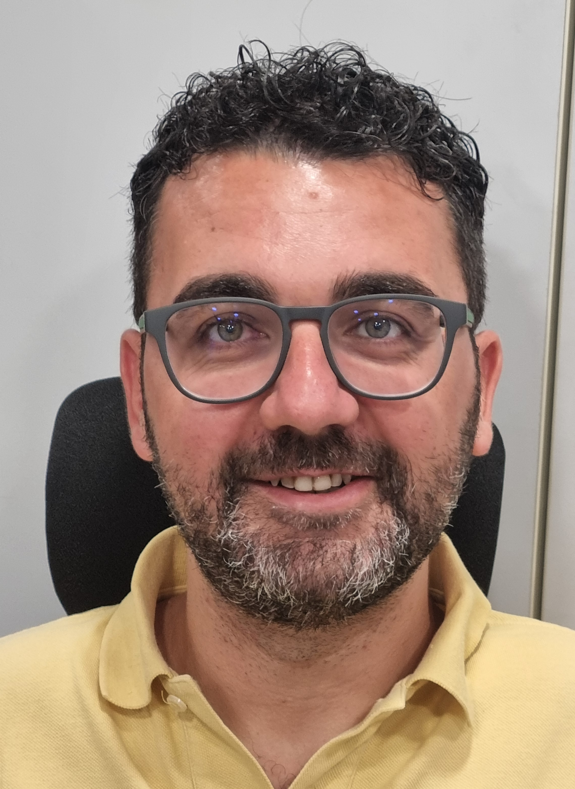
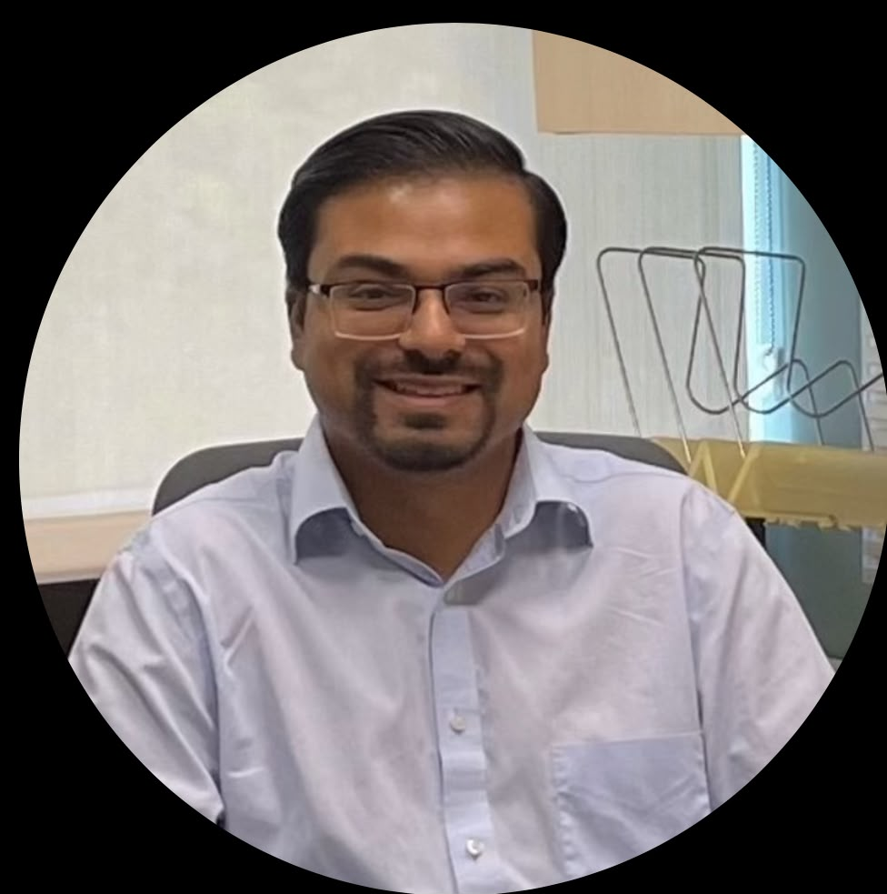
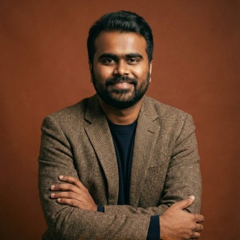

Dr. Luciano Alessandro Ipsaro Palesi
Department of Information Engineering (DINFO), University of Florence — DISIT Lab, Florence, Italy
AI-Enabled Urban Digital Twins for Adaptive Smart Mobility: From Data to Intelligent Traffic Control
About the keynote
Cities can turn fragmented urban data into adaptive traffic decisions only when AI is grounded in an executable Digital Twin. This keynote presents a data-driven approach to smart mobility, from urban data integration and traffic-state reconstruction to simulation and validation of intelligent traffic control.
It compares multi-objective optimization and Deep Reinforcement Learning for traffic-signal control, considering performance, interpretability, scalability, adaptability, and computational cost. Real-world examples from Florence and the Snap4City ecosystem show how AI-enabled Digital Twins can support more responsive urban mobility.
About the speaker
Dr. Ipsaro Palesi is a Research Fellow at the University of Florence and a member of DISIT Lab. His research spans Artificial Intelligence, Machine Learning, Digital Twins, decision-support systems, and smart and sustainable mobility. He has contributed to European and national projects in urban analytics and intelligent transportation, with work on traffic optimization, multi-agent deep reinforcement learning, and Smart City platforms.
Dr. Neelu Nagpal
Professor, Electronics & Communication Engineering Department, Maharaja Agrasen Institute of Technology, New Delhi; Senior Member, IEEE
Deep Learning for Power Quality Disturbance Detection and Localization
About the keynote
Smart cities depend on clean, reliable power, but growing renewable generation and power-electronic loads make power quality disturbances (PQDs) more frequent and harder to distinguish. This keynote explores how deep learning can detect and classify these disturbances, from representing waveforms as images to automated feature learning.
It examines the classification of single and multiple disturbances, their localization without complex signal-processing stages, and comparisons of alternative techniques for accurate estimation under noisy conditions. The talk closes with implications for smart meters and city-scale grid monitoring.
About the speaker
Dr. Neelu Nagpal is a Professor in the Electronics & Communication Engineering Department at Maharaja Agrasen Institute of Technology, New Delhi, and a Senior Member of IEEE. Her research spans stochastic and nonlinear control, state estimation, smart grid technologies, renewable energy integration, and artificial intelligence.

Dr. Shantanu Kumar
Assistant Professor, Nieri Department of Construction and Real Estate Development, College of Architecture, Art & Construction, Clemson University, Clemson, South Carolina
Towards a Reliable Future: Balancing Sustainability and Resilience for the Built Environment
About the keynote
Resilience cannot be maintained without being sustainable, and sustainability cannot be preserved without being resilient. To safeguard the future of our cities, buildings and infrastructure must be planned and constructed with both in mind. Unsustainable practices increase emissions, contributing to more frequent natural hazards and a greater need for resilience. A lack of resilience, in turn, increases resource consumption through more frequent repair and recovery. Historically, cost constraints have been used to justify decisions that compromise sustainability or resilience. However, technological advances can help cities improve both within limited budgets.
This keynote will explore the interconnected roles of sustainability and resilience in shaping cities and planning a more robust built environment. The discussion will examine how planning and construction decisions can address both emissions, and the resource demands of future repair and recovery. It will also consider how technological advances can help cities balance sustainability, resilience, and cost within limited budgets.
About the speaker
Dr. Shantanu Kumar is an Assistant Professor in the Department of Construction Science Management at Clemson University. He has more than a decade of professional construction experience and has been involved in several building and infrastructure projects. His research focuses on optimizing the built environment by improving sustainability and resilience planning in the context of natural hazards. He uses machine learning algorithms to develop decision-making models that help cities and counties navigate complex decisions more efficiently.

Ravichandu Baratam, M.S.
Engineering & Operations Leader, Construction Materials Testing & Geotechnical Engineering, Tampa, Florida; Vice President, GITAM Alumni Association of North America
AI-Enabled Permitting and Inspections: Bridging Public-Sector Resource Gaps Through Digital Platforms and Third-Party Engineering Expertise
About the talk
Many municipalities face growing permit backlogs and limited inspection staff while infrastructure demand keeps rising. This talk explores how AI-assisted permitting workflows, construction management platforms such as Procore, and networks of qualified third-party engineering consultants and inspectors can help cities streamline permitting and inspections.
Drawing on field experience in geotechnical engineering, materials testing, and threshold inspections, it shows how these tools can accelerate infrastructure development while preserving regulatory oversight and public safety.
About the speaker
Ravichandu Baratam is a civil engineering professional with more than a decade of experience in geotechnical engineering, construction materials testing, threshold and special inspections, and business development. Based in Tampa, Florida, he has led engineering operations and managed projects ranging from large residential land developments to high-rise buildings. Early in his career he worked on major infrastructure in India, including precast post-tensioned segmental bridges for the Dhola–Sadiya Bridge, India's longest river bridge. He holds a Master's degree in Civil Engineering from Texas A&M University-Kingsville and serves as Vice President of the GITAM Alumni Association of North America, where he supports mentoring and community initiatives for engineers and international professionals.
Preliminary Speaker Lineup
Speaker notifications will be issued on October 22, 2026, with confirmations due by October 26, 2026. The preliminary lineup of confirmed speakers and session titles will be published on November 5, 2026.